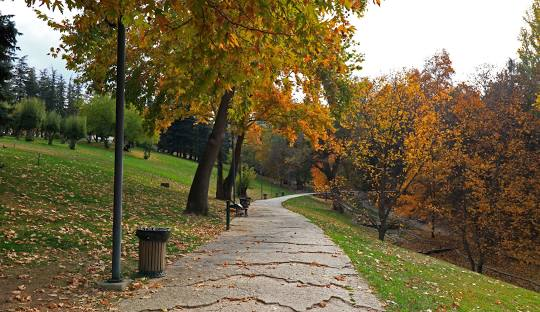

Ankara'nın Park Alanları
Burası Ankaranın Kuğlu parkı.
Ankara'nın Park Alanları
Burası Gençlerin Favori Mekanı Gençlik Parkı.

Ankara'nın Park Alanları
Seğmenler Parkı Doğayla İç İçe Olabiliceğiniz Bir Mekan.